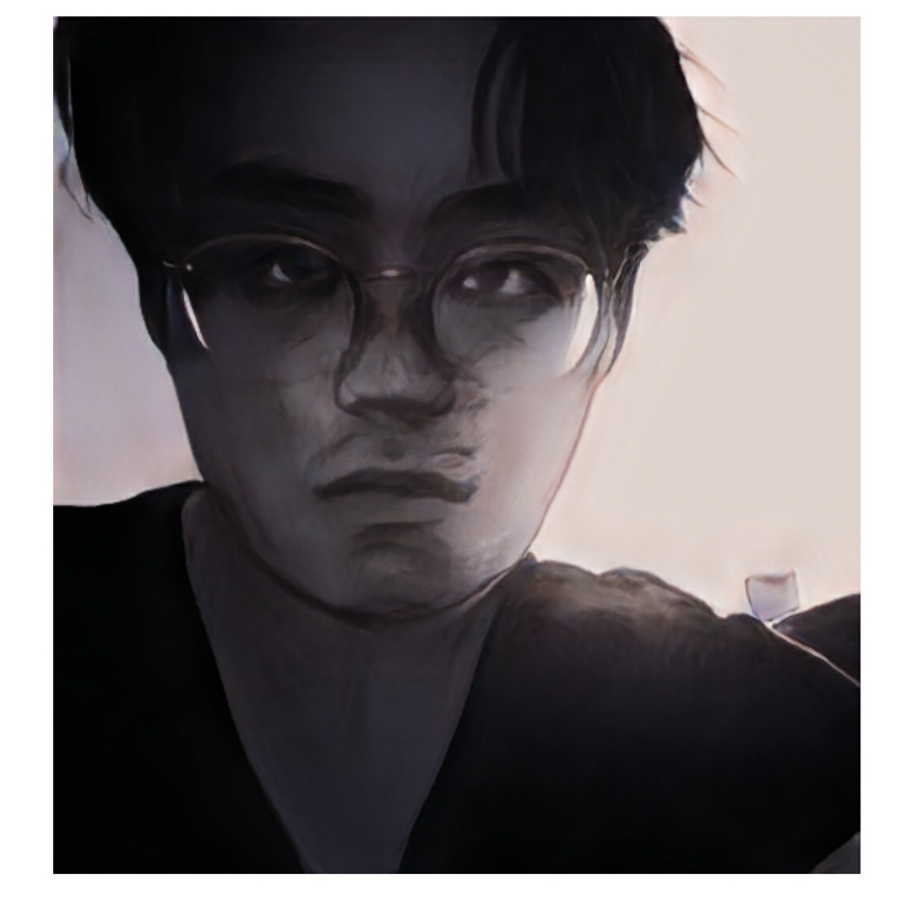

I am a graduate student in the mathematics department of UC Santa Cruz. Previously, I was an undergraduate at Reed College. During my time at Reed, I participated in the Budapest Semesters in Math and in the Math in Moscow programs.
I am currently on leave from grad school due to personal reasons until Fall 2023. In the meantime, I am working as a math teacher.
You can contact me using the email on the left, or using the email ykim172 at ucsc dot edu. If I don't respond within 48 hours, try resending your email.
I like category theory.
2022-2023 Courses:
